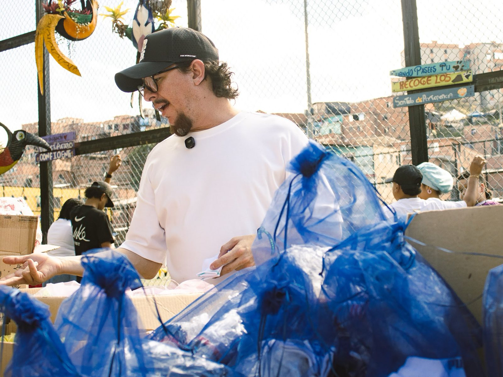

CUANDO EL TALENTO SOBRA Y LOS GUAYOS FALTAN
En Antioquia hay cientos de niños y jóvenes con talento futbolístico que se quedan por fuera de la cancha por algo tan simple como no tener un par de guayos. Entrenan descalzos, con zapatos prestados o con unos que ya les quedaron pequeños, y aun así siguen dando la pelea, partido a partido, por un sueño que merece competir en igualdad de condiciones.
La Guayatón es la iniciativa de Mateo Escobar para recolectar y donar guayos a esos deportistas antioqueños, para que el talento no se quede esperando en la banca por falta de un par de tenis.
No se trata solo de un zapato. Se trata de quitar una barrera que no debería existir entre un joven y su sueño.
UNOS GUAYOS SON UNA OPORTUNIDAD.
CÓMO FUNCIONA
Dona guayos en buen estado
Reúne los guayos que ya no uses pero que estén en condiciones de seguir jugando, y dales una segunda vida en las canchas de Antioquia.
Dona guayos nuevos
Si prefieres aportar un par nuevo, también lo puedes traer directamente o coordinar la compra y entrega con el equipo.
Dona dinero
Si no tienes guayos para donar, tu aporte económico se destina a la compra de guayos o equipos deportivos para los deportistas que más lo necesitan.
Llévalos a la Oficina 217 de la Asamblea de Antioquia, o coordina la entrega con el equipo.
DONA UNOS GUAYOS,
UNA OPORTUNIDAD
Tu par de guayos puede ser la oportunidad que un joven antioqueño estaba esperando.
Quiero donar →O escríbenos directamente al 311 311 4891
MOMENTOS DE LA GUAYATÓN
Entregas en Moravia y Yolombó: la alegría de un par de guayos nuevos.